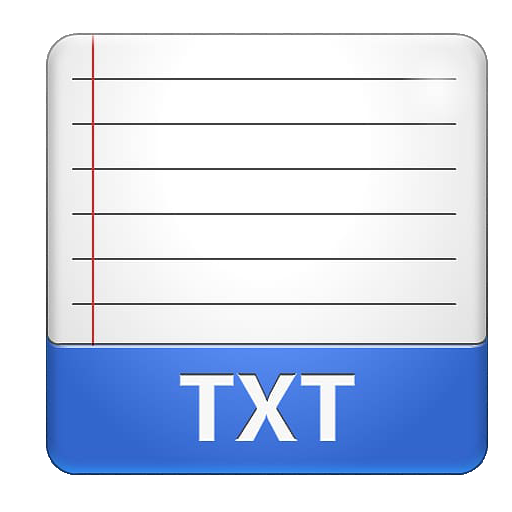
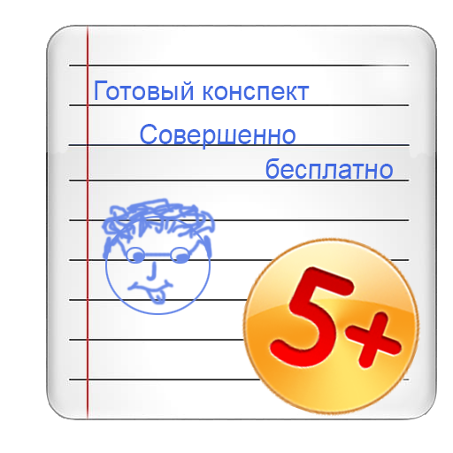

Не пиши конспект руками — делай его вместе с НАМИ


Мы помогаем создавать конспекты, не затрачивая на это много сил и времени, при этом имеется большое количество рукописных шрифтов на любой вкус.
Теперь ты можешь не тратить большое количество времени на написание конспекта, ведь с нами ты можешь сделать его за считанные минуты, просто кликни по кнопке ниже, вставь необходимый текст, выбери подъодящий шрифт, и получи желанный результат.